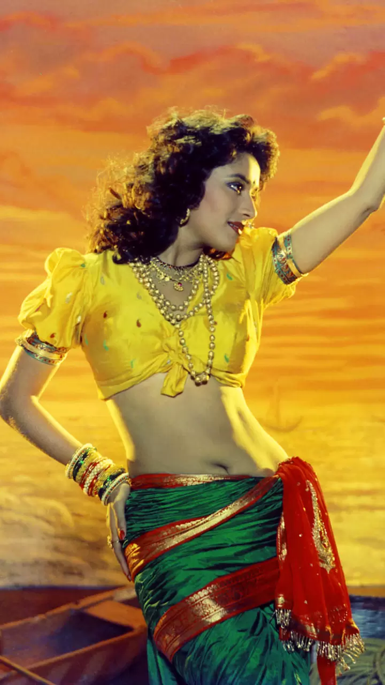
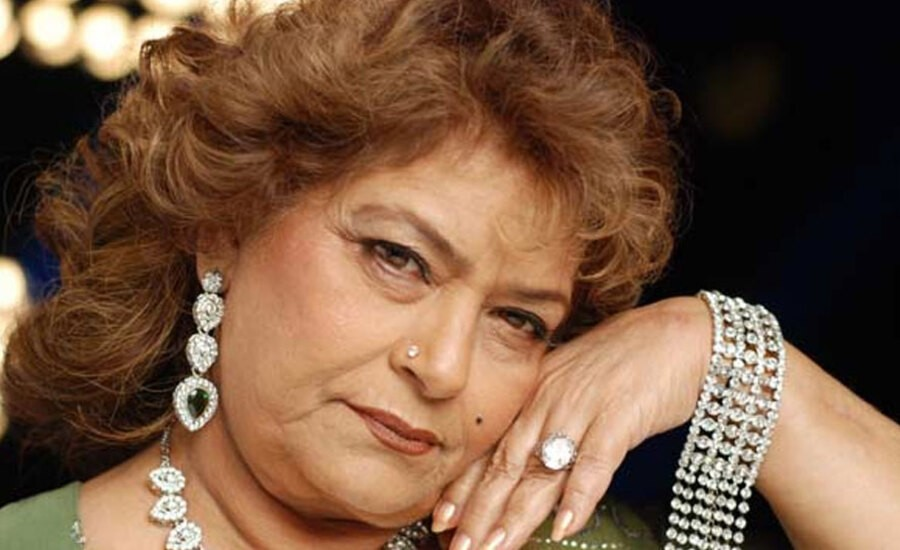

Madhuri dixit
Sridevi

Indian choreographer
Saroj khan :The ace choreographer who created magic with Madhuri Dixit, Sridevi
| Real name | Nirmala Nagpal |
|---|---|
| Born | 22 November 1948 |
| Died | 3 July 2020 (aged 71) Mumbai, Maharashtra, India |
| Occupation | Choreographer |
Saroj Khan was a prominent Indian dance choreographers in Hindi cinema. She was born on 22nd November 1948 in Mumbai, Maharashtra and has choreographed more than 200 films.
She was mostly trained in dance by B. Sohanlal. Saroj Khan’s real name is Nirmala Sadhu Songh. Father: Kishanchand Sadhu Singh Mother: Noni Sadhu Singh Saroj’s parents migrated from Pakistan to India during the partition in 1947. Saroj worked as a child actor in the movie Tarana at that time she was only two years old. You will not find her name in the cast but if you watch the movie she has played the little Shayama sitting on the moon and singing.
After making her debut as an independent choreographer in Gulzar's Mausam (1975), her first breakthrough came with Subhash Ghai's Hero (1983), but it was Sridevi's nagin dance in Nagina (1986) where she was noticed for her talent, followed up by Mr India. Next she worked with Madhuri Dixit in 'Ek Do Teen' number, Tezaab (1989) and later in Khalnayak, where she chorographed the Choli ke Peeche' number.She is very famous for her dialogue in Nach Baliye "Where is your choreographer?".She is also called 'moti bachi' by her family and friends. She has also appeared as a judge on reality dance competitions shows such as, Nach Baliye and Jhalak Dikhhla Jaa. She has won Filmfare Best Choreography Award eight times, and National Film Award for Best Choreography thrice.
| (2003) | Devdas for the song Dola Re Dola | (2006) | Sringaram (Tamil): For all songs |
|---|---|
| (2008) | Jab We Met: Yeh Ishq Hi Jannat Dikha |
Saroj Khan, the famous Bollywood choreographer passed away due to cardiac arrest on 3 July, 2020 at Mumbai hospital which is an irreparable loss to the entire Bollywood industry. May her soul rest in peace.